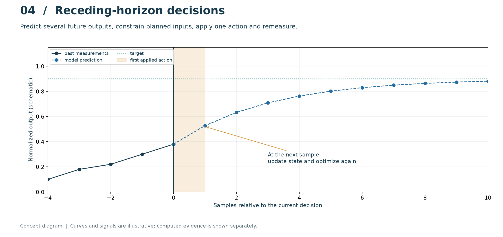
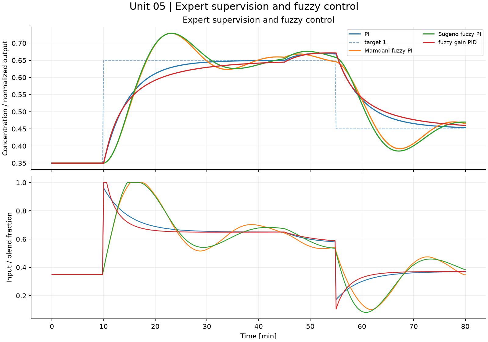

intelligent_control.methods
Inspectably small models, controllers and learning algorithms for the course.
The common Tank uses litres, minutes and dimensionless concentration. Time
constants, sample times and controller time units must remain consistent.
Array-oriented identification functions use rows for samples and columns for
features. LinearMPC predicts measured full states, with no output matrix or
state estimator. Neural normalization and model fitting use training data only.
Controllers are stateful: create a fresh instance for each independent run. These educational implementations use synthetic data and do not certify industrial stability, safety or generalization.
1"""Inspectably small models, controllers and learning algorithms for the course. 2 3The common `Tank` uses litres, minutes and dimensionless concentration. Time 4constants, sample times and controller time units must remain consistent. 5Array-oriented identification functions use rows for samples and columns for 6features. `LinearMPC` predicts measured full states, with no output matrix or 7state estimator. Neural normalization and model fitting use training data only. 8 9Controllers are stateful: create a fresh instance for each independent run. 10These educational implementations use synthetic data and do not certify 11industrial stability, safety or generalization. 12""" 13from dataclasses import dataclass 14import numpy as np 15from scipy.optimize import minimize 16 17 18@dataclass(frozen=True) 19class Tank: 20 """Constant-volume mixture: V dc/dt = q (u + d - c). 21 22 V in L, q in L/min, c and u dimensionless concentrations/fractions. 23 The disturbance d represents an additive change in inlet concentration. 24 """ 25 volume: float = 100.0 26 flow: float = 10.0 27 28 def __post_init__(self): 29 if self.volume <= 0 or self.flow <= 0: 30 raise ValueError('Positive volume and flow required') 31 32 @property 33 def tau(self): 34 """Return the residence time ``volume / flow`` in minutes.""" 35 return self.volume / self.flow 36 37 def step(self, c, u, dt, disturbance=0.0): 38 """Advance the exact constant-input concentration solution by one sample. 39 40 Parameters 41 ---------- 42 c : float or ndarray 43 Current dimensionless concentration. 44 u : float or ndarray 45 Applied inlet concentration, held constant over the sample. 46 dt : float 47 Positive elapsed time in minutes. 48 disturbance : float or ndarray, optional 49 Additive inlet-concentration change, also held constant. 50 51 Returns 52 ------- 53 float or ndarray 54 Concentration after ``dt``. Inputs are not clipped by this plant model. 55 """ 56 if dt <= 0: 57 raise ValueError('dt must be positive') 58 a = np.exp(-dt / self.tau) 59 return a*c + (1-a)*(u+disturbance) 60 61 62def variable_tank_rhs(t, state, q1, q2, qout, c1, c2): 63 """Mass balance with state [volume, concentration], arbitrary flow units.""" 64 v, c = np.asarray(state, float) 65 if v <= 0 or min(q1, q2, qout) < 0: 66 raise ValueError('Positive volume and nonnegative flows required') 67 return np.array([q1+q2-qout, (q1*(c1-c)+q2*(c2-c))/v]) 68 69 70def identification_metrics(y, yhat): 71 """Compare matching nonempty measured and predicted arrays. 72 73 Parameters 74 ---------- 75 y, yhat : array_like 76 Reference and predicted values with identical shape and compatible units. 77 78 Returns 79 ------- 80 dict 81 Maximum and mean absolute error, SSE, MSE, RMSE, variance accounted for 82 in percent, and coefficient of determination. All array elements are 83 aggregated together; multichannel results are not computed separately. 84 ``vaf_percent`` and ``r_squared`` are ``None`` for a constant reference. 85 86 Notes 87 ----- 88 VAF removes the mean prediction error through its variance calculation; 89 R-squared retains bias through SSE. Neither metric alone establishes 90 independent validation or recursive predictive accuracy. 91 """ 92 y, yhat = np.asarray(y, float), np.asarray(yhat, float) 93 if y.shape != yhat.shape or y.size == 0: 94 raise ValueError('Nonempty matching arrays required') 95 e = y-yhat 96 var = np.var(y) 97 sst = np.sum((y-y.mean())**2) 98 return dict(max_abs_error=float(np.max(np.abs(e))), 99 mean_abs_error=float(np.mean(np.abs(e))), 100 sse=float(np.sum(e**2)), mse=float(np.mean(e**2)), 101 rmse=float(np.sqrt(np.mean(e**2))), 102 vaf_percent=float(100*(1-np.var(e)/var)) if var > 0 else None, 103 r_squared=float(1-np.sum(e**2)/sst) if sst > 0 else None) 104 105 106def control_metrics(t, reference, output, control, lower=0., upper=1.): 107 """Summarize tracking, control effort and actuator excursions. 108 109 Parameters 110 ---------- 111 t : array_like, shape (n,) 112 Sample times, in increasing order and in the chosen time unit. 113 reference, output, control : array_like, shape (n,) 114 Aligned scalar setpoint, plant output and applied-input traces. 115 lower, upper : float, optional 116 Actuator limits used to measure the largest violation. 117 118 Returns 119 ------- 120 dict 121 Trapezoidal IAE, ISE, ITAE and integral of squared control; summed 122 absolute input movement; largest input-bound violation; and final 123 signed tracking error ``reference[-1] - output[-1]``. 124 125 Notes 126 ----- 127 ITAE uses the supplied absolute time coordinate. It is not reset at each 128 setpoint change. The last stored control value contributes to trapezoidal 129 effort metrics, so callers should state their terminal-sample convention. 130 """ 131 t, r, y, u = map(lambda x: np.asarray(x, float), (t, reference, output, control)) 132 if not (t.shape == r.shape == y.shape == u.shape) or len(t) < 2: 133 raise ValueError('Matching traces with at least two samples required') 134 e = r-y 135 return dict(iae=float(np.trapezoid(np.abs(e), t)), 136 ise=float(np.trapezoid(e*e, t)), 137 itae=float(np.trapezoid(t*np.abs(e), t)), 138 control_energy=float(np.trapezoid(u*u, t)), 139 total_variation=float(np.sum(np.abs(np.diff(u)))), 140 constraint_violation=float(max(0., np.max(u-upper), np.max(lower-u))), 141 final_error=float(e[-1])) 142 143 144class PID: 145 """Stateful PI/PID with filtered derivative on measurement and anti-windup. 146 147 ``kp``, ``ki`` and ``kd`` are parallel-form gains. ``dt`` and derivative 148 filter time ``tf`` use the same time unit as the plant; the teaching tank 149 uses minutes. ``limits`` bounds the applied input and ``bias`` defines its 150 nominal value. Integral, derivative and previous-measurement state start at 151 zero, zero and unavailable, respectively. 152 153 Conditional integration holds the integrator when a proposed update would 154 drive the actuator farther into saturation. Call a new instance for each 155 independent experiment; no global nonlinear stability guarantee is implied. 156 """ 157 def __init__(self, kp, ki, kd=0., dt=.2, limits=(0., 1.), bias=.35, tf=.5): 158 if dt <= 0 or tf <= 0 or limits[0] >= limits[1]: 159 raise ValueError('Invalid sampling, derivative filter or limits') 160 self.kp, self.ki, self.kd, self.dt = kp, ki, kd, dt 161 self.limits, self.bias, self.tf = limits, bias, tf 162 self.integral, self.derivative, self.last_y = 0., 0., None 163 164 def __call__(self, r, y, disturbance=0., *, offset=0.): 165 """Update the controller from a scalar reference and measurement. 166 167 ``offset`` adds feedforward before saturation and conditional integration. 168 The positional ``disturbance`` argument is accepted for the common 169 simulation interface but is not used by this controller. Return a bounded 170 scalar command and update the integral, derivative and measurement memory. 171 """ 172 error = r-y 173 dy = 0. if self.last_y is None else (y-self.last_y)/self.dt 174 self.derivative += self.dt/(self.tf+self.dt)*(dy-self.derivative) 175 candidate = self.integral + self.ki*self.dt*error 176 raw = self.bias + offset + self.kp*error + candidate - self.kd*self.derivative 177 value = np.clip(raw, *self.limits) 178 # Hold integration only if it drives the actuator further into saturation. 179 if raw == value or (raw > value and error < 0) or (raw < value and error > 0): 180 self.integral = candidate 181 else: 182 raw = self.bias+offset+self.kp*error+self.integral-self.kd*self.derivative 183 value = np.clip(raw, *self.limits) 184 self.last_y = y 185 return float(value) 186 187 188def imc_pi(gain, tau, delay=0., lam=5.): 189 """FOPDT IMC-inspired PI: Kc=tau/[K(lambda+theta)], Ti=tau.""" 190 if gain == 0 or tau <= 0 or delay < 0 or lam <= 0: 191 raise ValueError('Invalid FOPDT parameters') 192 kp = tau/(gain*(lam+delay)) 193 return kp, kp/tau 194 195 196def fit_arx(u, y): 197 """Least-squares y[k+1] = a*y[k] + b*u[k] + offset.""" 198 u, y = np.asarray(u), np.asarray(y) 199 if len(y) != len(u) or len(y) < 4: 200 raise ValueError('Matching sufficiently long input/output series required') 201 x = np.column_stack([y[:-1], u[:-1], np.ones(len(y)-1)]) 202 theta, _, rank, _ = np.linalg.lstsq(x, y[1:], rcond=None) 203 if rank < 3: 204 raise ValueError('Experiment is not sufficiently exciting') 205 return theta 206 207 208def arx_rollout(theta, u, y0): 209 """Recursively simulate an affine first-order ARX model. 210 211 Parameters 212 ---------- 213 theta : array_like, shape (3,) 214 Coefficients ``[a, b, offset]`` returned by `fit_arx`. 215 u : array_like, shape (n,) 216 Nonempty input sequence; the final input is not used for a transition. 217 y0 : float 218 Initial measured output, supplied as the first predicted sample. 219 220 Returns 221 ------- 222 ndarray, shape (n,) 223 Free-run predictions using previous predictions rather than future 224 measured outputs. The returned first value is the given initial seed. 225 """ 226 y = np.empty(len(u)); y[0] = y0 227 for k in range(len(u)-1): 228 y[k+1] = theta[0]*y[k]+theta[1]*u[k]+theta[2] 229 return y 230 231 232class LinearMPC: 233 """Full-state linear MPC with input, input-move and optional state bounds. 234 235 The prediction is ``x[k+1] = a @ x[k] + b @ (u[k] + disturbance)``. Matrix 236 ``a`` has shape ``(n, n)`` and ``b`` has shape ``(n, m)``. ``horizon`` and 237 ``control_horizon`` count samples; the last optimized input is held after 238 the control horizon. Scalar ``q`` weights squared state-tracking errors, 239 and ``move_weight`` weights squared successive input differences. 240 241 ``lower``, ``upper`` and ``max_move`` apply to every input component. 242 ``initial`` initializes each component of the previous feasible command. 243 Optional ``output_bounds=(lo, hi)`` constrains every predicted state because 244 the output is the full state; there is no separate output matrix. 245 246 SLSQP solves the convex quadratic problem. A failed or insufficiently 247 feasible solve holds the previous input and increments ``failures``; 248 ``calls`` counts all solves. This fallback does not guarantee future state 249 feasibility. No terminal stability condition or state estimator is added. 250 """ 251 def __init__(self, a, b, horizon=12, control_horizon=4, q=1., move_weight=.1, 252 lower=0., upper=1., max_move=.08, initial=.35, output_bounds=None): 253 self.a, self.b = np.atleast_2d(a).astype(float), np.atleast_2d(b).astype(float) 254 self.n, self.m = self.b.shape 255 if self.a.shape != (self.n, self.n) or not 1 <= control_horizon <= horizon: 256 raise ValueError('Invalid model/horizons') 257 if not (np.all(np.isfinite(self.a)) and np.all(np.isfinite(self.b))): 258 raise ValueError('Finite model matrices required') 259 if q <= 0 or move_weight < 0 or max_move <= 0 or lower >= upper or not lower <= initial <= upper: 260 raise ValueError('Positive state weight/move bound, nonnegative move weight and feasible initial input required') 261 if output_bounds is not None and output_bounds[0] >= output_bounds[1]: 262 raise ValueError('Invalid output bounds') 263 self.h, self.hc, self.q, self.rho = horizon, control_horizon, q, move_weight 264 self.lower, self.upper, self.max_move = lower, upper, max_move 265 self.previous = np.full(self.m, initial, float) 266 self.output_bounds = output_bounds 267 self.failures, self.calls = 0, 0 268 269 def predict(self, z, x, disturbance): 270 """Predict full-state trajectories for a flattened candidate input plan. 271 272 Parameters 273 ---------- 274 z : ndarray, shape (control_horizon * m,) 275 Absolute actuator values, arranged sample first and input second. 276 x : ndarray, shape (n,) 277 Current full state. 278 disturbance : float or array_like, shape (m,) 279 Constant additive input disturbance over the prediction horizon. 280 281 Returns 282 ------- 283 ndarray, shape (horizon, n) 284 States from the next sample through the final prediction step. This 285 evaluation does not check constraints or change controller memory. 286 """ 287 moves = z.reshape(self.hc, self.m) 288 ys = [] 289 for k in range(self.h): 290 x = self.a@x + self.b@(moves[min(k, self.hc-1)]+disturbance) 291 ys.append(x.copy()) 292 return np.asarray(ys) 293 294 def __call__(self, reference, state, disturbance=0.): 295 """Solve one receding-horizon problem and apply its first command. 296 297 ``reference`` is a constant full-state target over the horizon and 298 ``state`` is the current measured full state. ``disturbance`` is an 299 additive input-channel estimate. Return a float for one input or a copied 300 vector for multiple inputs; update ``previous``, ``calls`` and ``failures`` 301 according to the solve outcome. 302 """ 303 x, ref = np.atleast_1d(state), np.atleast_1d(reference) 304 def objective(z): 305 yp = self.predict(z, x, disturbance) 306 du = np.diff(np.vstack([self.previous, z.reshape(self.hc,self.m)]), axis=0) 307 return self.q*np.sum((yp-ref)**2) + self.rho*np.sum(du**2) 308 def moves_constraint(z): 309 du = np.diff(np.vstack([self.previous,z.reshape(self.hc,self.m)]),axis=0) 310 return self.max_move-np.abs(du).ravel() 311 constraints = [{'type':'ineq','fun':moves_constraint}] 312 if self.output_bounds is not None: 313 lo, hi = self.output_bounds 314 def outputs_constraint(z): 315 yp = self.predict(z,x,disturbance) 316 return np.r_[ (yp-lo).ravel(), (hi-yp).ravel() ] 317 constraints.append({'type':'ineq','fun':outputs_constraint}) 318 result = minimize(objective, np.tile(self.previous,self.hc), method='SLSQP', 319 bounds=[(self.lower,self.upper)]*(self.hc*self.m), 320 constraints=constraints, options={'maxiter':100,'ftol':1e-9}) 321 self.calls += 1 322 feasible = all(np.min(c['fun'](result.x)) >= -1e-7 for c in constraints) 323 feasible = feasible and np.all(result.x >= self.lower-1e-7) and np.all(result.x <= self.upper+1e-7) 324 if result.success and feasible: 325 self.previous = result.x[:self.m].copy() 326 else: 327 self.failures += 1 328 return float(self.previous[0]) if self.m == 1 else self.previous.copy() 329 330 331def memberships(x): 332 """Three shoulder/triangle sets covering the full normalized domain.""" 333 x = float(np.clip(x, -1., 1.)) 334 return np.array([max(-x,0.), 1.-abs(x), max(x,0.)]) 335 336 337def fuzzy_inference(error, delta_error, kind='mamdani'): 338 """9-rule PD surface; min/max/centroid or product/singleton Sugeno.""" 339 me, md = memberships(error), memberships(delta_error) 340 labels = np.array([-1.,0.,1.]) 341 rules = np.clip(labels[:,None]+.5*labels[None,:], -1, 1) 342 if kind == 'sugeno': 343 firing = me[:,None]*md[None,:] 344 return float(np.sum(firing*rules)/np.sum(firing)) 345 if kind != 'mamdani': 346 raise ValueError('Unknown inference family') 347 universe = np.linspace(-1.5,1.5,301) 348 aggregate = np.zeros_like(universe) 349 for i in range(3): 350 for j in range(3): 351 mf = np.maximum(1-abs(universe-rules[i,j])/.5,0) 352 aggregate = np.maximum(aggregate,np.minimum(min(me[i],md[j]),mf)) 353 return float(np.trapezoid(universe*aggregate,universe)/np.trapezoid(aggregate,universe)) 354 355 356class FuzzyPI: 357 """Incremental fuzzy PI; bounded increment and actuator prevent windup.""" 358 def __init__(self, dt=.2, kind='mamdani', initial=.35): 359 self.dt, self.kind, self.u, self.old_error = dt, kind, initial, 0. 360 def __call__(self,r,y,disturbance=0.): 361 """Update the bounded incremental controller from scalar tracking error. 362 363 The selected Mamdani or Sugeno surface uses the current error and its 364 sampled change. Return an inlet fraction in ``[0, 1]`` and update command 365 and error memory. ``disturbance`` is an unused interface argument. 366 """ 367 e = r-y 368 f = fuzzy_inference(e/.25,(e-self.old_error)/(.1*self.dt),self.kind) 369 self.u = float(np.clip(self.u+.18*self.dt*f,0,1)) 370 self.old_error = e 371 return self.u 372 373 374class FuzzyPID(PID): 375 """Gain-scheduled PID; fuzzy surface changes gains, not the error sign.""" 376 def __call__(self,r,y,disturbance=0.): 377 """Schedule all three gains from error severity, then apply PID. 378 379 The inherited filtered-derivative and conditional-integration states are 380 updated by `PID`. Return its bounded command. Scheduling is a declared 381 teaching rule, not an identified plant-dependent gain law. 382 """ 383 severity = abs(fuzzy_inference((r-y)/.3,0,'sugeno')) 384 self.kp, self.ki, self.kd = 1.4+1.2*severity, .14+.08*severity, .1*severity 385 return super().__call__(r,y,disturbance) 386 387 388def diagnose(y, u, reference, sensor_valid=True, residual=0.): 389 """Transparent priority-ordered expert rules; outputs reasons and actions.""" 390 if not sensor_valid or not np.isfinite(y): 391 return {'state':'sensor_fault','action':'hold_safe','reason':'invalid measurement'} 392 if y > .9: 393 return {'state':'high_concentration','action':'reduce_high_feed','reason':'c > 0.9'} 394 if u >= .999 and reference-y > .1: 395 return {'state':'actuator_limit','action':'review_setpoint','reason':'saturation with positive error'} 396 if abs(residual) > .08: 397 return {'state':'model_mismatch','action':'inspect_disturbance','reason':'prediction residual exceeds 0.08'} 398 return {'state':'normal','action':'continue','reason':'no rule threshold exceeded'} 399 400 401def train_perceptron(x, labels, epochs=100, rate=.1): 402 """Train an affine binary classifier by sequential mistake updates. 403 404 Parameters 405 ---------- 406 x : array_like, shape (n_samples, n_features) 407 Training feature rows, in the order visited during every epoch. 408 labels : array_like, shape (n_samples,) 409 Target labels encoded as ``-1`` or ``+1``. 410 epochs : int, optional 411 Maximum number of passes; stop early after a mistake-free pass. 412 rate : float, optional 413 Positive learning-rate coefficient. 414 415 Returns 416 ------- 417 ndarray, shape (n_features + 1,) 418 Feature weights followed by the intercept. Classify an augmented row 419 as ``+1`` when its score is nonnegative and ``-1`` otherwise. Inputs 420 are not normalized internally; nonseparable data need not converge. 421 """ 422 x, labels = np.asarray(x), np.asarray(labels) 423 xb = np.column_stack([x,np.ones(len(x))]); w = np.zeros(xb.shape[1]) 424 for _ in range(epochs): 425 changes = 0 426 for row,target in zip(xb,labels): 427 predicted = 1 if row@w >= 0 else -1 428 if predicted != target: 429 w += rate*target*row; changes += 1 430 if changes == 0: break 431 return w 432 433 434class MLP: 435 """One hidden tanh layer with normalized training data and Adam updates.""" 436 def __init__(self, hidden=12, seed=42): 437 self.hidden, self.seed = hidden, seed 438 def fit(self,x,y,epochs=1800,rate=.01): 439 """Fit a scalar regressor using training-only normalization and Adam. 440 441 Parameters 442 ---------- 443 x : array_like, shape (n_samples, n_features) 444 Training inputs; column means and standard deviations are saved. 445 y : array_like, shape (n_samples,) 446 Scalar targets, normalized using their training statistics. 447 epochs : int, optional 448 Number of full-batch gradient updates. 449 rate : float, optional 450 Adam learning rate. 451 452 Returns 453 ------- 454 MLP 455 This fitted instance. ``loss`` records normalized training MSE every 456 100 updates; no validation data or early stopping are used. Repeated 457 calls reinitialize parameters from the instance's seed. 458 """ 459 x,y=np.asarray(x,float),np.asarray(y,float).reshape(-1,1) 460 self.xmean,self.xstd=x.mean(0),np.maximum(x.std(0),1e-8) 461 self.ymean,self.ystd=y.mean(0),np.maximum(y.std(0),1e-8) 462 z,target=(x-self.xmean)/self.xstd,(y-self.ymean)/self.ystd 463 rng=np.random.default_rng(self.seed) 464 self.params=[rng.normal(0,.3,(x.shape[1],self.hidden)),np.zeros(self.hidden), 465 rng.normal(0,.3,(self.hidden,1)),np.zeros(1)] 466 m=[np.zeros_like(p) for p in self.params]; v=[p.copy() for p in m] 467 self.loss=[] 468 for k in range(1,epochs+1): 469 w,b,wo,bo=self.params; h=np.tanh(z@w+b); e=h@wo+bo-target 470 out=2*e/len(z); dh=(out@wo.T)*(1-h*h) 471 grads=[z.T@dh,dh.sum(0),h.T@out,out.sum(0)] 472 for j,g in enumerate(grads): 473 m[j]=.9*m[j]+.1*g;v[j]=.999*v[j]+.001*g*g 474 self.params[j]-=rate*(m[j]/(1-.9**k))/(np.sqrt(v[j]/(1-.999**k))+1e-8) 475 if k%100==0:self.loss.append(float(np.mean(e*e))) 476 return self 477 def predict(self,x): 478 """Predict scalar outputs in the original target units. 479 480 Pass input rows of shape ``(n_samples, n_features)`` after calling `fit`. 481 The return is a flat vector of length ``n_samples``. Saved training 482 statistics are reused, without refitting on evaluation inputs. 483 """ 484 w,b,wo,bo=self.params 485 return ((np.tanh((np.asarray(x)-self.xmean)/self.xstd@w+b)@wo+bo)*self.ystd+self.ymean).ravel() 486 487 488class RBF: 489 """Gaussian features; centers chosen only from training inputs, ridge fit.""" 490 def fit(self,x,y,centers=20,seed=42,width=1.,ridge=1e-6): 491 """Fit an affine-plus-Gaussian regressor from training inputs only. 492 493 Parameters 494 ---------- 495 x : array_like, shape (n_samples, n_features) 496 Training inputs, normalized using their saved column statistics. 497 y : array_like, shape (n_samples,) or (n_samples, n_outputs) 498 Targets in the units retained by predictions. 499 centers : int, optional 500 Maximum number of centers sampled without replacement from training 501 rows; at most ``n_samples`` centers are used. 502 seed : int, optional 503 Seed for center selection. 504 width : float, optional 505 Positive Gaussian width in normalized feature coordinates. 506 ridge : float, optional 507 Ridge penalty applied to all feature weights, including the intercept. 508 509 Returns 510 ------- 511 RBF 512 This fitted instance. Features include an intercept, normalized linear 513 inputs and Gaussian radial responses. No evaluation samples select 514 centers, normalization or fitted weights. 515 """ 516 x=np.asarray(x,float);self.mean=x.mean(0);self.std=np.maximum(x.std(0),1e-8) 517 z=(x-self.mean)/self.std 518 rng=np.random.default_rng(seed) 519 self.centers=z[rng.choice(len(z),min(centers,len(z)),replace=False)] 520 self.width=width; phi=self._features(z) 521 self.weights=np.linalg.solve(phi.T@phi+ridge*np.eye(phi.shape[1]),phi.T@np.asarray(y)) 522 return self 523 def _features(self,z): 524 d=np.sum((z[:,None,:]-self.centers[None,:,:])**2,axis=2) 525 return np.column_stack([np.ones(len(z)),z,np.exp(-d/(2*self.width**2))]) 526 def predict(self,x): 527 """Predict from input rows using the fitted training transformation. 528 529 Call `fit` first. A scalar target fit returns shape ``(n_samples,)``; 530 multiple target columns retain shape ``(n_samples, n_outputs)``. This 531 function neither clips predictions nor guarantees extrapolation accuracy. 532 """ 533 return self._features((np.asarray(x)-self.mean)/self.std)@self.weights 534 535 536def fit_som(x,shape=(3,3),epochs=30,seed=42): 537 """Rectangular self-organizing map with neighborhood and learning decay.""" 538 x=np.asarray(x,float);rng=np.random.default_rng(seed) 539 coords=np.array(list(np.ndindex(shape))); w=x[rng.choice(len(x),len(coords),replace=False)].copy() 540 for epoch in range(epochs): 541 rate=.4*(1-epoch/epochs)+.02; sigma=max(.5,2*(1-epoch/epochs)) 542 for row in x[rng.permutation(len(x))]: 543 bmu=np.argmin(np.sum((w-row)**2,axis=1)) 544 influence=np.exp(-np.sum((coords-coords[bmu])**2,axis=1)/(2*sigma*sigma)) 545 w+=rate*influence[:,None]*(row-w) 546 distances=np.linalg.norm(x[:,None,:]-w[None,:,:],axis=2) 547 return w,np.argmin(distances,axis=1),float(np.mean(np.min(distances,axis=1))) 548 549 550def genetic_optimize(objective,bounds,population=24,generations=24,seed=42,encoding='real',bits=12): 551 """Elitism, tournament selection, crossover and mutation; fixed evaluation budget.""" 552 bounds=np.asarray(bounds,float); dim=len(bounds);rng=np.random.default_rng(seed) 553 if encoding not in ('real','binary') or population < 4 or np.any(bounds[:,1]<=bounds[:,0]): 554 raise ValueError('Invalid GA configuration') 555 if encoding=='real': 556 pop=rng.uniform(0,1,(population,dim)) 557 decode=lambda z:bounds[:,0]+z*(bounds[:,1]-bounds[:,0]) 558 else: 559 pop=rng.integers(0,2,(population,dim*bits)) 560 def decode(z): 561 ints=z.reshape(dim,bits)@(2**np.arange(bits-1,-1,-1)) 562 return bounds[:,0]+ints/(2**bits-1)*(bounds[:,1]-bounds[:,0]) 563 history=[]; evaluations=0 564 for generation in range(generations+1): 565 score=np.array([objective(decode(row)) for row in pop]); evaluations+=len(pop) 566 if not np.all(np.isfinite(score)):raise ValueError('Nonfinite fitness') 567 best=np.argmin(score);history.append(float(score[best])) 568 if generation==generations:break 569 new=[pop[best].copy()] 570 def select(): 571 ids=rng.integers(population,size=3);return pop[ids[np.argmin(score[ids])]] 572 while len(new)<population: 573 a,b=select(),select() 574 if encoding=='real': 575 alpha=rng.random(dim);child=alpha*a+(1-alpha)*b 576 child+=rng.normal(0,.08,dim)*(rng.random(dim)<.25) 577 child=np.clip(child,0,1) 578 else: 579 cut=rng.integers(1,len(a));child=np.r_[a[:cut],b[cut:]].copy() 580 child^=(rng.random(len(child))<1/len(child)).astype(int) 581 new.append(child) 582 pop=np.asarray(new) 583 return {'parameters':decode(pop[best]).tolist(),'fitness':float(score[best]), 584 'history':history,'evaluations':evaluations,'encoding':encoding,'seed':seed}
Illustrated guide
Equipment, information flow and computed evidence. Captions distinguish nonlinear records from fitted-predictor exercises.


19@dataclass(frozen=True) 20class Tank: 21 """Constant-volume mixture: V dc/dt = q (u + d - c). 22 23 V in L, q in L/min, c and u dimensionless concentrations/fractions. 24 The disturbance d represents an additive change in inlet concentration. 25 """ 26 volume: float = 100.0 27 flow: float = 10.0 28 29 def __post_init__(self): 30 if self.volume <= 0 or self.flow <= 0: 31 raise ValueError('Positive volume and flow required') 32 33 @property 34 def tau(self): 35 """Return the residence time ``volume / flow`` in minutes.""" 36 return self.volume / self.flow 37 38 def step(self, c, u, dt, disturbance=0.0): 39 """Advance the exact constant-input concentration solution by one sample. 40 41 Parameters 42 ---------- 43 c : float or ndarray 44 Current dimensionless concentration. 45 u : float or ndarray 46 Applied inlet concentration, held constant over the sample. 47 dt : float 48 Positive elapsed time in minutes. 49 disturbance : float or ndarray, optional 50 Additive inlet-concentration change, also held constant. 51 52 Returns 53 ------- 54 float or ndarray 55 Concentration after ``dt``. Inputs are not clipped by this plant model. 56 """ 57 if dt <= 0: 58 raise ValueError('dt must be positive') 59 a = np.exp(-dt / self.tau) 60 return a*c + (1-a)*(u+disturbance)
Constant-volume mixture: V dc/dt = q (u + d - c).
V in L, q in L/min, c and u dimensionless concentrations/fractions. The disturbance d represents an additive change in inlet concentration.
33 @property 34 def tau(self): 35 """Return the residence time ``volume / flow`` in minutes.""" 36 return self.volume / self.flow
Return the residence time volume / flow in minutes.
38 def step(self, c, u, dt, disturbance=0.0): 39 """Advance the exact constant-input concentration solution by one sample. 40 41 Parameters 42 ---------- 43 c : float or ndarray 44 Current dimensionless concentration. 45 u : float or ndarray 46 Applied inlet concentration, held constant over the sample. 47 dt : float 48 Positive elapsed time in minutes. 49 disturbance : float or ndarray, optional 50 Additive inlet-concentration change, also held constant. 51 52 Returns 53 ------- 54 float or ndarray 55 Concentration after ``dt``. Inputs are not clipped by this plant model. 56 """ 57 if dt <= 0: 58 raise ValueError('dt must be positive') 59 a = np.exp(-dt / self.tau) 60 return a*c + (1-a)*(u+disturbance)
Advance the exact constant-input concentration solution by one sample.
Parameters
- c (float or ndarray): Current dimensionless concentration.
- u (float or ndarray): Applied inlet concentration, held constant over the sample.
- dt (float): Positive elapsed time in minutes.
- disturbance (float or ndarray, optional): Additive inlet-concentration change, also held constant.
Returns
- float or ndarray: Concentration after
dt. Inputs are not clipped by this plant model.
63def variable_tank_rhs(t, state, q1, q2, qout, c1, c2): 64 """Mass balance with state [volume, concentration], arbitrary flow units.""" 65 v, c = np.asarray(state, float) 66 if v <= 0 or min(q1, q2, qout) < 0: 67 raise ValueError('Positive volume and nonnegative flows required') 68 return np.array([q1+q2-qout, (q1*(c1-c)+q2*(c2-c))/v])
Mass balance with state [volume, concentration], arbitrary flow units.
71def identification_metrics(y, yhat): 72 """Compare matching nonempty measured and predicted arrays. 73 74 Parameters 75 ---------- 76 y, yhat : array_like 77 Reference and predicted values with identical shape and compatible units. 78 79 Returns 80 ------- 81 dict 82 Maximum and mean absolute error, SSE, MSE, RMSE, variance accounted for 83 in percent, and coefficient of determination. All array elements are 84 aggregated together; multichannel results are not computed separately. 85 ``vaf_percent`` and ``r_squared`` are ``None`` for a constant reference. 86 87 Notes 88 ----- 89 VAF removes the mean prediction error through its variance calculation; 90 R-squared retains bias through SSE. Neither metric alone establishes 91 independent validation or recursive predictive accuracy. 92 """ 93 y, yhat = np.asarray(y, float), np.asarray(yhat, float) 94 if y.shape != yhat.shape or y.size == 0: 95 raise ValueError('Nonempty matching arrays required') 96 e = y-yhat 97 var = np.var(y) 98 sst = np.sum((y-y.mean())**2) 99 return dict(max_abs_error=float(np.max(np.abs(e))), 100 mean_abs_error=float(np.mean(np.abs(e))), 101 sse=float(np.sum(e**2)), mse=float(np.mean(e**2)), 102 rmse=float(np.sqrt(np.mean(e**2))), 103 vaf_percent=float(100*(1-np.var(e)/var)) if var > 0 else None, 104 r_squared=float(1-np.sum(e**2)/sst) if sst > 0 else None)
Compare matching nonempty measured and predicted arrays.
Parameters
- y, yhat (array_like): Reference and predicted values with identical shape and compatible units.
Returns
- dict: Maximum and mean absolute error, SSE, MSE, RMSE, variance accounted for
in percent, and coefficient of determination. All array elements are
aggregated together; multichannel results are not computed separately.
vaf_percentandr_squaredareNonefor a constant reference.
Notes
VAF removes the mean prediction error through its variance calculation; R-squared retains bias through SSE. Neither metric alone establishes independent validation or recursive predictive accuracy.
107def control_metrics(t, reference, output, control, lower=0., upper=1.): 108 """Summarize tracking, control effort and actuator excursions. 109 110 Parameters 111 ---------- 112 t : array_like, shape (n,) 113 Sample times, in increasing order and in the chosen time unit. 114 reference, output, control : array_like, shape (n,) 115 Aligned scalar setpoint, plant output and applied-input traces. 116 lower, upper : float, optional 117 Actuator limits used to measure the largest violation. 118 119 Returns 120 ------- 121 dict 122 Trapezoidal IAE, ISE, ITAE and integral of squared control; summed 123 absolute input movement; largest input-bound violation; and final 124 signed tracking error ``reference[-1] - output[-1]``. 125 126 Notes 127 ----- 128 ITAE uses the supplied absolute time coordinate. It is not reset at each 129 setpoint change. The last stored control value contributes to trapezoidal 130 effort metrics, so callers should state their terminal-sample convention. 131 """ 132 t, r, y, u = map(lambda x: np.asarray(x, float), (t, reference, output, control)) 133 if not (t.shape == r.shape == y.shape == u.shape) or len(t) < 2: 134 raise ValueError('Matching traces with at least two samples required') 135 e = r-y 136 return dict(iae=float(np.trapezoid(np.abs(e), t)), 137 ise=float(np.trapezoid(e*e, t)), 138 itae=float(np.trapezoid(t*np.abs(e), t)), 139 control_energy=float(np.trapezoid(u*u, t)), 140 total_variation=float(np.sum(np.abs(np.diff(u)))), 141 constraint_violation=float(max(0., np.max(u-upper), np.max(lower-u))), 142 final_error=float(e[-1]))
Summarize tracking, control effort and actuator excursions.
Parameters
- t (array_like, shape (n,)): Sample times, in increasing order and in the chosen time unit.
- reference, output, control (array_like, shape (n,)): Aligned scalar setpoint, plant output and applied-input traces.
- lower, upper (float, optional): Actuator limits used to measure the largest violation.
Returns
- dict: Trapezoidal IAE, ISE, ITAE and integral of squared control; summed
absolute input movement; largest input-bound violation; and final
signed tracking error
reference[-1] - output[-1].
Notes
ITAE uses the supplied absolute time coordinate. It is not reset at each setpoint change. The last stored control value contributes to trapezoidal effort metrics, so callers should state their terminal-sample convention.
145class PID: 146 """Stateful PI/PID with filtered derivative on measurement and anti-windup. 147 148 ``kp``, ``ki`` and ``kd`` are parallel-form gains. ``dt`` and derivative 149 filter time ``tf`` use the same time unit as the plant; the teaching tank 150 uses minutes. ``limits`` bounds the applied input and ``bias`` defines its 151 nominal value. Integral, derivative and previous-measurement state start at 152 zero, zero and unavailable, respectively. 153 154 Conditional integration holds the integrator when a proposed update would 155 drive the actuator farther into saturation. Call a new instance for each 156 independent experiment; no global nonlinear stability guarantee is implied. 157 """ 158 def __init__(self, kp, ki, kd=0., dt=.2, limits=(0., 1.), bias=.35, tf=.5): 159 if dt <= 0 or tf <= 0 or limits[0] >= limits[1]: 160 raise ValueError('Invalid sampling, derivative filter or limits') 161 self.kp, self.ki, self.kd, self.dt = kp, ki, kd, dt 162 self.limits, self.bias, self.tf = limits, bias, tf 163 self.integral, self.derivative, self.last_y = 0., 0., None 164 165 def __call__(self, r, y, disturbance=0., *, offset=0.): 166 """Update the controller from a scalar reference and measurement. 167 168 ``offset`` adds feedforward before saturation and conditional integration. 169 The positional ``disturbance`` argument is accepted for the common 170 simulation interface but is not used by this controller. Return a bounded 171 scalar command and update the integral, derivative and measurement memory. 172 """ 173 error = r-y 174 dy = 0. if self.last_y is None else (y-self.last_y)/self.dt 175 self.derivative += self.dt/(self.tf+self.dt)*(dy-self.derivative) 176 candidate = self.integral + self.ki*self.dt*error 177 raw = self.bias + offset + self.kp*error + candidate - self.kd*self.derivative 178 value = np.clip(raw, *self.limits) 179 # Hold integration only if it drives the actuator further into saturation. 180 if raw == value or (raw > value and error < 0) or (raw < value and error > 0): 181 self.integral = candidate 182 else: 183 raw = self.bias+offset+self.kp*error+self.integral-self.kd*self.derivative 184 value = np.clip(raw, *self.limits) 185 self.last_y = y 186 return float(value)
Stateful PI/PID with filtered derivative on measurement and anti-windup.
kp, ki and kd are parallel-form gains. dt and derivative
filter time tf use the same time unit as the plant; the teaching tank
uses minutes. limits bounds the applied input and bias defines its
nominal value. Integral, derivative and previous-measurement state start at
zero, zero and unavailable, respectively.
Conditional integration holds the integrator when a proposed update would drive the actuator farther into saturation. Call a new instance for each independent experiment; no global nonlinear stability guarantee is implied.
158 def __init__(self, kp, ki, kd=0., dt=.2, limits=(0., 1.), bias=.35, tf=.5): 159 if dt <= 0 or tf <= 0 or limits[0] >= limits[1]: 160 raise ValueError('Invalid sampling, derivative filter or limits') 161 self.kp, self.ki, self.kd, self.dt = kp, ki, kd, dt 162 self.limits, self.bias, self.tf = limits, bias, tf 163 self.integral, self.derivative, self.last_y = 0., 0., None
189def imc_pi(gain, tau, delay=0., lam=5.): 190 """FOPDT IMC-inspired PI: Kc=tau/[K(lambda+theta)], Ti=tau.""" 191 if gain == 0 or tau <= 0 or delay < 0 or lam <= 0: 192 raise ValueError('Invalid FOPDT parameters') 193 kp = tau/(gain*(lam+delay)) 194 return kp, kp/tau
FOPDT IMC-inspired PI: Kc=tau/[K(lambda+theta)], Ti=tau.
197def fit_arx(u, y): 198 """Least-squares y[k+1] = a*y[k] + b*u[k] + offset.""" 199 u, y = np.asarray(u), np.asarray(y) 200 if len(y) != len(u) or len(y) < 4: 201 raise ValueError('Matching sufficiently long input/output series required') 202 x = np.column_stack([y[:-1], u[:-1], np.ones(len(y)-1)]) 203 theta, _, rank, _ = np.linalg.lstsq(x, y[1:], rcond=None) 204 if rank < 3: 205 raise ValueError('Experiment is not sufficiently exciting') 206 return theta
Least-squares y[k+1] = ay[k] + bu[k] + offset.
209def arx_rollout(theta, u, y0): 210 """Recursively simulate an affine first-order ARX model. 211 212 Parameters 213 ---------- 214 theta : array_like, shape (3,) 215 Coefficients ``[a, b, offset]`` returned by `fit_arx`. 216 u : array_like, shape (n,) 217 Nonempty input sequence; the final input is not used for a transition. 218 y0 : float 219 Initial measured output, supplied as the first predicted sample. 220 221 Returns 222 ------- 223 ndarray, shape (n,) 224 Free-run predictions using previous predictions rather than future 225 measured outputs. The returned first value is the given initial seed. 226 """ 227 y = np.empty(len(u)); y[0] = y0 228 for k in range(len(u)-1): 229 y[k+1] = theta[0]*y[k]+theta[1]*u[k]+theta[2] 230 return y
Recursively simulate an affine first-order ARX model.
Parameters
- theta (array_like, shape (3,)):
Coefficients
[a, b, offset]returned byfit_arx. - u (array_like, shape (n,)): Nonempty input sequence; the final input is not used for a transition.
- y0 (float): Initial measured output, supplied as the first predicted sample.
Returns
- ndarray, shape (n,): Free-run predictions using previous predictions rather than future measured outputs. The returned first value is the given initial seed.
233class LinearMPC: 234 """Full-state linear MPC with input, input-move and optional state bounds. 235 236 The prediction is ``x[k+1] = a @ x[k] + b @ (u[k] + disturbance)``. Matrix 237 ``a`` has shape ``(n, n)`` and ``b`` has shape ``(n, m)``. ``horizon`` and 238 ``control_horizon`` count samples; the last optimized input is held after 239 the control horizon. Scalar ``q`` weights squared state-tracking errors, 240 and ``move_weight`` weights squared successive input differences. 241 242 ``lower``, ``upper`` and ``max_move`` apply to every input component. 243 ``initial`` initializes each component of the previous feasible command. 244 Optional ``output_bounds=(lo, hi)`` constrains every predicted state because 245 the output is the full state; there is no separate output matrix. 246 247 SLSQP solves the convex quadratic problem. A failed or insufficiently 248 feasible solve holds the previous input and increments ``failures``; 249 ``calls`` counts all solves. This fallback does not guarantee future state 250 feasibility. No terminal stability condition or state estimator is added. 251 """ 252 def __init__(self, a, b, horizon=12, control_horizon=4, q=1., move_weight=.1, 253 lower=0., upper=1., max_move=.08, initial=.35, output_bounds=None): 254 self.a, self.b = np.atleast_2d(a).astype(float), np.atleast_2d(b).astype(float) 255 self.n, self.m = self.b.shape 256 if self.a.shape != (self.n, self.n) or not 1 <= control_horizon <= horizon: 257 raise ValueError('Invalid model/horizons') 258 if not (np.all(np.isfinite(self.a)) and np.all(np.isfinite(self.b))): 259 raise ValueError('Finite model matrices required') 260 if q <= 0 or move_weight < 0 or max_move <= 0 or lower >= upper or not lower <= initial <= upper: 261 raise ValueError('Positive state weight/move bound, nonnegative move weight and feasible initial input required') 262 if output_bounds is not None and output_bounds[0] >= output_bounds[1]: 263 raise ValueError('Invalid output bounds') 264 self.h, self.hc, self.q, self.rho = horizon, control_horizon, q, move_weight 265 self.lower, self.upper, self.max_move = lower, upper, max_move 266 self.previous = np.full(self.m, initial, float) 267 self.output_bounds = output_bounds 268 self.failures, self.calls = 0, 0 269 270 def predict(self, z, x, disturbance): 271 """Predict full-state trajectories for a flattened candidate input plan. 272 273 Parameters 274 ---------- 275 z : ndarray, shape (control_horizon * m,) 276 Absolute actuator values, arranged sample first and input second. 277 x : ndarray, shape (n,) 278 Current full state. 279 disturbance : float or array_like, shape (m,) 280 Constant additive input disturbance over the prediction horizon. 281 282 Returns 283 ------- 284 ndarray, shape (horizon, n) 285 States from the next sample through the final prediction step. This 286 evaluation does not check constraints or change controller memory. 287 """ 288 moves = z.reshape(self.hc, self.m) 289 ys = [] 290 for k in range(self.h): 291 x = self.a@x + self.b@(moves[min(k, self.hc-1)]+disturbance) 292 ys.append(x.copy()) 293 return np.asarray(ys) 294 295 def __call__(self, reference, state, disturbance=0.): 296 """Solve one receding-horizon problem and apply its first command. 297 298 ``reference`` is a constant full-state target over the horizon and 299 ``state`` is the current measured full state. ``disturbance`` is an 300 additive input-channel estimate. Return a float for one input or a copied 301 vector for multiple inputs; update ``previous``, ``calls`` and ``failures`` 302 according to the solve outcome. 303 """ 304 x, ref = np.atleast_1d(state), np.atleast_1d(reference) 305 def objective(z): 306 yp = self.predict(z, x, disturbance) 307 du = np.diff(np.vstack([self.previous, z.reshape(self.hc,self.m)]), axis=0) 308 return self.q*np.sum((yp-ref)**2) + self.rho*np.sum(du**2) 309 def moves_constraint(z): 310 du = np.diff(np.vstack([self.previous,z.reshape(self.hc,self.m)]),axis=0) 311 return self.max_move-np.abs(du).ravel() 312 constraints = [{'type':'ineq','fun':moves_constraint}] 313 if self.output_bounds is not None: 314 lo, hi = self.output_bounds 315 def outputs_constraint(z): 316 yp = self.predict(z,x,disturbance) 317 return np.r_[ (yp-lo).ravel(), (hi-yp).ravel() ] 318 constraints.append({'type':'ineq','fun':outputs_constraint}) 319 result = minimize(objective, np.tile(self.previous,self.hc), method='SLSQP', 320 bounds=[(self.lower,self.upper)]*(self.hc*self.m), 321 constraints=constraints, options={'maxiter':100,'ftol':1e-9}) 322 self.calls += 1 323 feasible = all(np.min(c['fun'](result.x)) >= -1e-7 for c in constraints) 324 feasible = feasible and np.all(result.x >= self.lower-1e-7) and np.all(result.x <= self.upper+1e-7) 325 if result.success and feasible: 326 self.previous = result.x[:self.m].copy() 327 else: 328 self.failures += 1 329 return float(self.previous[0]) if self.m == 1 else self.previous.copy()
Full-state linear MPC with input, input-move and optional state bounds.
The prediction is x[k+1] = a @ x[k] + b @ (u[k] + disturbance). Matrix
a has shape (n, n) and b has shape (n, m). horizon and
control_horizon count samples; the last optimized input is held after
the control horizon. Scalar q weights squared state-tracking errors,
and move_weight weights squared successive input differences.
lower, upper and max_move apply to every input component.
initial initializes each component of the previous feasible command.
Optional output_bounds=(lo, hi) constrains every predicted state because
the output is the full state; there is no separate output matrix.
SLSQP solves the convex quadratic problem. A failed or insufficiently
feasible solve holds the previous input and increments failures;
calls counts all solves. This fallback does not guarantee future state
feasibility. No terminal stability condition or state estimator is added.
252 def __init__(self, a, b, horizon=12, control_horizon=4, q=1., move_weight=.1, 253 lower=0., upper=1., max_move=.08, initial=.35, output_bounds=None): 254 self.a, self.b = np.atleast_2d(a).astype(float), np.atleast_2d(b).astype(float) 255 self.n, self.m = self.b.shape 256 if self.a.shape != (self.n, self.n) or not 1 <= control_horizon <= horizon: 257 raise ValueError('Invalid model/horizons') 258 if not (np.all(np.isfinite(self.a)) and np.all(np.isfinite(self.b))): 259 raise ValueError('Finite model matrices required') 260 if q <= 0 or move_weight < 0 or max_move <= 0 or lower >= upper or not lower <= initial <= upper: 261 raise ValueError('Positive state weight/move bound, nonnegative move weight and feasible initial input required') 262 if output_bounds is not None and output_bounds[0] >= output_bounds[1]: 263 raise ValueError('Invalid output bounds') 264 self.h, self.hc, self.q, self.rho = horizon, control_horizon, q, move_weight 265 self.lower, self.upper, self.max_move = lower, upper, max_move 266 self.previous = np.full(self.m, initial, float) 267 self.output_bounds = output_bounds 268 self.failures, self.calls = 0, 0
270 def predict(self, z, x, disturbance): 271 """Predict full-state trajectories for a flattened candidate input plan. 272 273 Parameters 274 ---------- 275 z : ndarray, shape (control_horizon * m,) 276 Absolute actuator values, arranged sample first and input second. 277 x : ndarray, shape (n,) 278 Current full state. 279 disturbance : float or array_like, shape (m,) 280 Constant additive input disturbance over the prediction horizon. 281 282 Returns 283 ------- 284 ndarray, shape (horizon, n) 285 States from the next sample through the final prediction step. This 286 evaluation does not check constraints or change controller memory. 287 """ 288 moves = z.reshape(self.hc, self.m) 289 ys = [] 290 for k in range(self.h): 291 x = self.a@x + self.b@(moves[min(k, self.hc-1)]+disturbance) 292 ys.append(x.copy()) 293 return np.asarray(ys)
Predict full-state trajectories for a flattened candidate input plan.
Parameters
- z (ndarray, shape (control_horizon * m,)): Absolute actuator values, arranged sample first and input second.
- x (ndarray, shape (n,)): Current full state.
- disturbance (float or array_like, shape (m,)): Constant additive input disturbance over the prediction horizon.
Returns
- ndarray, shape (horizon, n): States from the next sample through the final prediction step. This evaluation does not check constraints or change controller memory.
332def memberships(x): 333 """Three shoulder/triangle sets covering the full normalized domain.""" 334 x = float(np.clip(x, -1., 1.)) 335 return np.array([max(-x,0.), 1.-abs(x), max(x,0.)])
Three shoulder/triangle sets covering the full normalized domain.
338def fuzzy_inference(error, delta_error, kind='mamdani'): 339 """9-rule PD surface; min/max/centroid or product/singleton Sugeno.""" 340 me, md = memberships(error), memberships(delta_error) 341 labels = np.array([-1.,0.,1.]) 342 rules = np.clip(labels[:,None]+.5*labels[None,:], -1, 1) 343 if kind == 'sugeno': 344 firing = me[:,None]*md[None,:] 345 return float(np.sum(firing*rules)/np.sum(firing)) 346 if kind != 'mamdani': 347 raise ValueError('Unknown inference family') 348 universe = np.linspace(-1.5,1.5,301) 349 aggregate = np.zeros_like(universe) 350 for i in range(3): 351 for j in range(3): 352 mf = np.maximum(1-abs(universe-rules[i,j])/.5,0) 353 aggregate = np.maximum(aggregate,np.minimum(min(me[i],md[j]),mf)) 354 return float(np.trapezoid(universe*aggregate,universe)/np.trapezoid(aggregate,universe))
9-rule PD surface; min/max/centroid or product/singleton Sugeno.
357class FuzzyPI: 358 """Incremental fuzzy PI; bounded increment and actuator prevent windup.""" 359 def __init__(self, dt=.2, kind='mamdani', initial=.35): 360 self.dt, self.kind, self.u, self.old_error = dt, kind, initial, 0. 361 def __call__(self,r,y,disturbance=0.): 362 """Update the bounded incremental controller from scalar tracking error. 363 364 The selected Mamdani or Sugeno surface uses the current error and its 365 sampled change. Return an inlet fraction in ``[0, 1]`` and update command 366 and error memory. ``disturbance`` is an unused interface argument. 367 """ 368 e = r-y 369 f = fuzzy_inference(e/.25,(e-self.old_error)/(.1*self.dt),self.kind) 370 self.u = float(np.clip(self.u+.18*self.dt*f,0,1)) 371 self.old_error = e 372 return self.u
Incremental fuzzy PI; bounded increment and actuator prevent windup.
375class FuzzyPID(PID): 376 """Gain-scheduled PID; fuzzy surface changes gains, not the error sign.""" 377 def __call__(self,r,y,disturbance=0.): 378 """Schedule all three gains from error severity, then apply PID. 379 380 The inherited filtered-derivative and conditional-integration states are 381 updated by `PID`. Return its bounded command. Scheduling is a declared 382 teaching rule, not an identified plant-dependent gain law. 383 """ 384 severity = abs(fuzzy_inference((r-y)/.3,0,'sugeno')) 385 self.kp, self.ki, self.kd = 1.4+1.2*severity, .14+.08*severity, .1*severity 386 return super().__call__(r,y,disturbance)
Gain-scheduled PID; fuzzy surface changes gains, not the error sign.
389def diagnose(y, u, reference, sensor_valid=True, residual=0.): 390 """Transparent priority-ordered expert rules; outputs reasons and actions.""" 391 if not sensor_valid or not np.isfinite(y): 392 return {'state':'sensor_fault','action':'hold_safe','reason':'invalid measurement'} 393 if y > .9: 394 return {'state':'high_concentration','action':'reduce_high_feed','reason':'c > 0.9'} 395 if u >= .999 and reference-y > .1: 396 return {'state':'actuator_limit','action':'review_setpoint','reason':'saturation with positive error'} 397 if abs(residual) > .08: 398 return {'state':'model_mismatch','action':'inspect_disturbance','reason':'prediction residual exceeds 0.08'} 399 return {'state':'normal','action':'continue','reason':'no rule threshold exceeded'}
Transparent priority-ordered expert rules; outputs reasons and actions.
402def train_perceptron(x, labels, epochs=100, rate=.1): 403 """Train an affine binary classifier by sequential mistake updates. 404 405 Parameters 406 ---------- 407 x : array_like, shape (n_samples, n_features) 408 Training feature rows, in the order visited during every epoch. 409 labels : array_like, shape (n_samples,) 410 Target labels encoded as ``-1`` or ``+1``. 411 epochs : int, optional 412 Maximum number of passes; stop early after a mistake-free pass. 413 rate : float, optional 414 Positive learning-rate coefficient. 415 416 Returns 417 ------- 418 ndarray, shape (n_features + 1,) 419 Feature weights followed by the intercept. Classify an augmented row 420 as ``+1`` when its score is nonnegative and ``-1`` otherwise. Inputs 421 are not normalized internally; nonseparable data need not converge. 422 """ 423 x, labels = np.asarray(x), np.asarray(labels) 424 xb = np.column_stack([x,np.ones(len(x))]); w = np.zeros(xb.shape[1]) 425 for _ in range(epochs): 426 changes = 0 427 for row,target in zip(xb,labels): 428 predicted = 1 if row@w >= 0 else -1 429 if predicted != target: 430 w += rate*target*row; changes += 1 431 if changes == 0: break 432 return w
Train an affine binary classifier by sequential mistake updates.
Parameters
- x (array_like, shape (n_samples, n_features)): Training feature rows, in the order visited during every epoch.
- labels (array_like, shape (n_samples,)):
Target labels encoded as
-1or+1. - epochs (int, optional): Maximum number of passes; stop early after a mistake-free pass.
- rate (float, optional): Positive learning-rate coefficient.
Returns
- ndarray, shape (n_features + 1,): Feature weights followed by the intercept. Classify an augmented row
as
+1when its score is nonnegative and-1otherwise. Inputs are not normalized internally; nonseparable data need not converge.
435class MLP: 436 """One hidden tanh layer with normalized training data and Adam updates.""" 437 def __init__(self, hidden=12, seed=42): 438 self.hidden, self.seed = hidden, seed 439 def fit(self,x,y,epochs=1800,rate=.01): 440 """Fit a scalar regressor using training-only normalization and Adam. 441 442 Parameters 443 ---------- 444 x : array_like, shape (n_samples, n_features) 445 Training inputs; column means and standard deviations are saved. 446 y : array_like, shape (n_samples,) 447 Scalar targets, normalized using their training statistics. 448 epochs : int, optional 449 Number of full-batch gradient updates. 450 rate : float, optional 451 Adam learning rate. 452 453 Returns 454 ------- 455 MLP 456 This fitted instance. ``loss`` records normalized training MSE every 457 100 updates; no validation data or early stopping are used. Repeated 458 calls reinitialize parameters from the instance's seed. 459 """ 460 x,y=np.asarray(x,float),np.asarray(y,float).reshape(-1,1) 461 self.xmean,self.xstd=x.mean(0),np.maximum(x.std(0),1e-8) 462 self.ymean,self.ystd=y.mean(0),np.maximum(y.std(0),1e-8) 463 z,target=(x-self.xmean)/self.xstd,(y-self.ymean)/self.ystd 464 rng=np.random.default_rng(self.seed) 465 self.params=[rng.normal(0,.3,(x.shape[1],self.hidden)),np.zeros(self.hidden), 466 rng.normal(0,.3,(self.hidden,1)),np.zeros(1)] 467 m=[np.zeros_like(p) for p in self.params]; v=[p.copy() for p in m] 468 self.loss=[] 469 for k in range(1,epochs+1): 470 w,b,wo,bo=self.params; h=np.tanh(z@w+b); e=h@wo+bo-target 471 out=2*e/len(z); dh=(out@wo.T)*(1-h*h) 472 grads=[z.T@dh,dh.sum(0),h.T@out,out.sum(0)] 473 for j,g in enumerate(grads): 474 m[j]=.9*m[j]+.1*g;v[j]=.999*v[j]+.001*g*g 475 self.params[j]-=rate*(m[j]/(1-.9**k))/(np.sqrt(v[j]/(1-.999**k))+1e-8) 476 if k%100==0:self.loss.append(float(np.mean(e*e))) 477 return self 478 def predict(self,x): 479 """Predict scalar outputs in the original target units. 480 481 Pass input rows of shape ``(n_samples, n_features)`` after calling `fit`. 482 The return is a flat vector of length ``n_samples``. Saved training 483 statistics are reused, without refitting on evaluation inputs. 484 """ 485 w,b,wo,bo=self.params 486 return ((np.tanh((np.asarray(x)-self.xmean)/self.xstd@w+b)@wo+bo)*self.ystd+self.ymean).ravel()
One hidden tanh layer with normalized training data and Adam updates.
439 def fit(self,x,y,epochs=1800,rate=.01): 440 """Fit a scalar regressor using training-only normalization and Adam. 441 442 Parameters 443 ---------- 444 x : array_like, shape (n_samples, n_features) 445 Training inputs; column means and standard deviations are saved. 446 y : array_like, shape (n_samples,) 447 Scalar targets, normalized using their training statistics. 448 epochs : int, optional 449 Number of full-batch gradient updates. 450 rate : float, optional 451 Adam learning rate. 452 453 Returns 454 ------- 455 MLP 456 This fitted instance. ``loss`` records normalized training MSE every 457 100 updates; no validation data or early stopping are used. Repeated 458 calls reinitialize parameters from the instance's seed. 459 """ 460 x,y=np.asarray(x,float),np.asarray(y,float).reshape(-1,1) 461 self.xmean,self.xstd=x.mean(0),np.maximum(x.std(0),1e-8) 462 self.ymean,self.ystd=y.mean(0),np.maximum(y.std(0),1e-8) 463 z,target=(x-self.xmean)/self.xstd,(y-self.ymean)/self.ystd 464 rng=np.random.default_rng(self.seed) 465 self.params=[rng.normal(0,.3,(x.shape[1],self.hidden)),np.zeros(self.hidden), 466 rng.normal(0,.3,(self.hidden,1)),np.zeros(1)] 467 m=[np.zeros_like(p) for p in self.params]; v=[p.copy() for p in m] 468 self.loss=[] 469 for k in range(1,epochs+1): 470 w,b,wo,bo=self.params; h=np.tanh(z@w+b); e=h@wo+bo-target 471 out=2*e/len(z); dh=(out@wo.T)*(1-h*h) 472 grads=[z.T@dh,dh.sum(0),h.T@out,out.sum(0)] 473 for j,g in enumerate(grads): 474 m[j]=.9*m[j]+.1*g;v[j]=.999*v[j]+.001*g*g 475 self.params[j]-=rate*(m[j]/(1-.9**k))/(np.sqrt(v[j]/(1-.999**k))+1e-8) 476 if k%100==0:self.loss.append(float(np.mean(e*e))) 477 return self
Fit a scalar regressor using training-only normalization and Adam.
Parameters
- x (array_like, shape (n_samples, n_features)): Training inputs; column means and standard deviations are saved.
- y (array_like, shape (n_samples,)): Scalar targets, normalized using their training statistics.
- epochs (int, optional): Number of full-batch gradient updates.
- rate (float, optional): Adam learning rate.
Returns
- MLP: This fitted instance.
lossrecords normalized training MSE every 100 updates; no validation data or early stopping are used. Repeated calls reinitialize parameters from the instance's seed.
478 def predict(self,x): 479 """Predict scalar outputs in the original target units. 480 481 Pass input rows of shape ``(n_samples, n_features)`` after calling `fit`. 482 The return is a flat vector of length ``n_samples``. Saved training 483 statistics are reused, without refitting on evaluation inputs. 484 """ 485 w,b,wo,bo=self.params 486 return ((np.tanh((np.asarray(x)-self.xmean)/self.xstd@w+b)@wo+bo)*self.ystd+self.ymean).ravel()
Predict scalar outputs in the original target units.
Pass input rows of shape (n_samples, n_features) after calling fit.
The return is a flat vector of length n_samples. Saved training
statistics are reused, without refitting on evaluation inputs.
489class RBF: 490 """Gaussian features; centers chosen only from training inputs, ridge fit.""" 491 def fit(self,x,y,centers=20,seed=42,width=1.,ridge=1e-6): 492 """Fit an affine-plus-Gaussian regressor from training inputs only. 493 494 Parameters 495 ---------- 496 x : array_like, shape (n_samples, n_features) 497 Training inputs, normalized using their saved column statistics. 498 y : array_like, shape (n_samples,) or (n_samples, n_outputs) 499 Targets in the units retained by predictions. 500 centers : int, optional 501 Maximum number of centers sampled without replacement from training 502 rows; at most ``n_samples`` centers are used. 503 seed : int, optional 504 Seed for center selection. 505 width : float, optional 506 Positive Gaussian width in normalized feature coordinates. 507 ridge : float, optional 508 Ridge penalty applied to all feature weights, including the intercept. 509 510 Returns 511 ------- 512 RBF 513 This fitted instance. Features include an intercept, normalized linear 514 inputs and Gaussian radial responses. No evaluation samples select 515 centers, normalization or fitted weights. 516 """ 517 x=np.asarray(x,float);self.mean=x.mean(0);self.std=np.maximum(x.std(0),1e-8) 518 z=(x-self.mean)/self.std 519 rng=np.random.default_rng(seed) 520 self.centers=z[rng.choice(len(z),min(centers,len(z)),replace=False)] 521 self.width=width; phi=self._features(z) 522 self.weights=np.linalg.solve(phi.T@phi+ridge*np.eye(phi.shape[1]),phi.T@np.asarray(y)) 523 return self 524 def _features(self,z): 525 d=np.sum((z[:,None,:]-self.centers[None,:,:])**2,axis=2) 526 return np.column_stack([np.ones(len(z)),z,np.exp(-d/(2*self.width**2))]) 527 def predict(self,x): 528 """Predict from input rows using the fitted training transformation. 529 530 Call `fit` first. A scalar target fit returns shape ``(n_samples,)``; 531 multiple target columns retain shape ``(n_samples, n_outputs)``. This 532 function neither clips predictions nor guarantees extrapolation accuracy. 533 """ 534 return self._features((np.asarray(x)-self.mean)/self.std)@self.weights
Gaussian features; centers chosen only from training inputs, ridge fit.
491 def fit(self,x,y,centers=20,seed=42,width=1.,ridge=1e-6): 492 """Fit an affine-plus-Gaussian regressor from training inputs only. 493 494 Parameters 495 ---------- 496 x : array_like, shape (n_samples, n_features) 497 Training inputs, normalized using their saved column statistics. 498 y : array_like, shape (n_samples,) or (n_samples, n_outputs) 499 Targets in the units retained by predictions. 500 centers : int, optional 501 Maximum number of centers sampled without replacement from training 502 rows; at most ``n_samples`` centers are used. 503 seed : int, optional 504 Seed for center selection. 505 width : float, optional 506 Positive Gaussian width in normalized feature coordinates. 507 ridge : float, optional 508 Ridge penalty applied to all feature weights, including the intercept. 509 510 Returns 511 ------- 512 RBF 513 This fitted instance. Features include an intercept, normalized linear 514 inputs and Gaussian radial responses. No evaluation samples select 515 centers, normalization or fitted weights. 516 """ 517 x=np.asarray(x,float);self.mean=x.mean(0);self.std=np.maximum(x.std(0),1e-8) 518 z=(x-self.mean)/self.std 519 rng=np.random.default_rng(seed) 520 self.centers=z[rng.choice(len(z),min(centers,len(z)),replace=False)] 521 self.width=width; phi=self._features(z) 522 self.weights=np.linalg.solve(phi.T@phi+ridge*np.eye(phi.shape[1]),phi.T@np.asarray(y)) 523 return self
Fit an affine-plus-Gaussian regressor from training inputs only.
Parameters
- x (array_like, shape (n_samples, n_features)): Training inputs, normalized using their saved column statistics.
- y (array_like, shape (n_samples,) or (n_samples, n_outputs)): Targets in the units retained by predictions.
- centers (int, optional):
Maximum number of centers sampled without replacement from training
rows; at most
n_samplescenters are used. - seed (int, optional): Seed for center selection.
- width (float, optional): Positive Gaussian width in normalized feature coordinates.
- ridge (float, optional): Ridge penalty applied to all feature weights, including the intercept.
Returns
- RBF: This fitted instance. Features include an intercept, normalized linear inputs and Gaussian radial responses. No evaluation samples select centers, normalization or fitted weights.
527 def predict(self,x): 528 """Predict from input rows using the fitted training transformation. 529 530 Call `fit` first. A scalar target fit returns shape ``(n_samples,)``; 531 multiple target columns retain shape ``(n_samples, n_outputs)``. This 532 function neither clips predictions nor guarantees extrapolation accuracy. 533 """ 534 return self._features((np.asarray(x)-self.mean)/self.std)@self.weights
Predict from input rows using the fitted training transformation.
Call fit first. A scalar target fit returns shape (n_samples,);
multiple target columns retain shape (n_samples, n_outputs). This
function neither clips predictions nor guarantees extrapolation accuracy.
537def fit_som(x,shape=(3,3),epochs=30,seed=42): 538 """Rectangular self-organizing map with neighborhood and learning decay.""" 539 x=np.asarray(x,float);rng=np.random.default_rng(seed) 540 coords=np.array(list(np.ndindex(shape))); w=x[rng.choice(len(x),len(coords),replace=False)].copy() 541 for epoch in range(epochs): 542 rate=.4*(1-epoch/epochs)+.02; sigma=max(.5,2*(1-epoch/epochs)) 543 for row in x[rng.permutation(len(x))]: 544 bmu=np.argmin(np.sum((w-row)**2,axis=1)) 545 influence=np.exp(-np.sum((coords-coords[bmu])**2,axis=1)/(2*sigma*sigma)) 546 w+=rate*influence[:,None]*(row-w) 547 distances=np.linalg.norm(x[:,None,:]-w[None,:,:],axis=2) 548 return w,np.argmin(distances,axis=1),float(np.mean(np.min(distances,axis=1)))
Rectangular self-organizing map with neighborhood and learning decay.
551def genetic_optimize(objective,bounds,population=24,generations=24,seed=42,encoding='real',bits=12): 552 """Elitism, tournament selection, crossover and mutation; fixed evaluation budget.""" 553 bounds=np.asarray(bounds,float); dim=len(bounds);rng=np.random.default_rng(seed) 554 if encoding not in ('real','binary') or population < 4 or np.any(bounds[:,1]<=bounds[:,0]): 555 raise ValueError('Invalid GA configuration') 556 if encoding=='real': 557 pop=rng.uniform(0,1,(population,dim)) 558 decode=lambda z:bounds[:,0]+z*(bounds[:,1]-bounds[:,0]) 559 else: 560 pop=rng.integers(0,2,(population,dim*bits)) 561 def decode(z): 562 ints=z.reshape(dim,bits)@(2**np.arange(bits-1,-1,-1)) 563 return bounds[:,0]+ints/(2**bits-1)*(bounds[:,1]-bounds[:,0]) 564 history=[]; evaluations=0 565 for generation in range(generations+1): 566 score=np.array([objective(decode(row)) for row in pop]); evaluations+=len(pop) 567 if not np.all(np.isfinite(score)):raise ValueError('Nonfinite fitness') 568 best=np.argmin(score);history.append(float(score[best])) 569 if generation==generations:break 570 new=[pop[best].copy()] 571 def select(): 572 ids=rng.integers(population,size=3);return pop[ids[np.argmin(score[ids])]] 573 while len(new)<population: 574 a,b=select(),select() 575 if encoding=='real': 576 alpha=rng.random(dim);child=alpha*a+(1-alpha)*b 577 child+=rng.normal(0,.08,dim)*(rng.random(dim)<.25) 578 child=np.clip(child,0,1) 579 else: 580 cut=rng.integers(1,len(a));child=np.r_[a[:cut],b[cut:]].copy() 581 child^=(rng.random(len(child))<1/len(child)).astype(int) 582 new.append(child) 583 pop=np.asarray(new) 584 return {'parameters':decode(pop[best]).tolist(),'fitness':float(score[best]), 585 'history':history,'evaluations':evaluations,'encoding':encoding,'seed':seed}
Elitism, tournament selection, crossover and mutation; fixed evaluation budget.